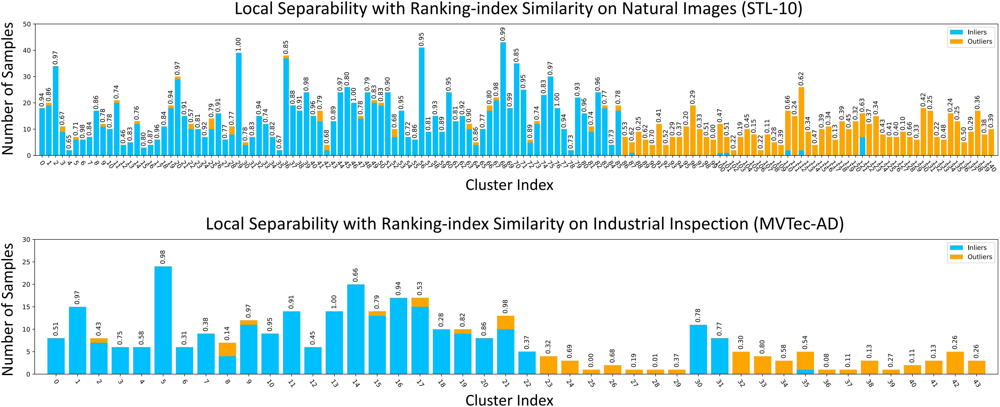

Local Separability
we adopt Affinity Propagation (AP), which will split the target dataset's features into a series of fine-grained clusters. All clusters can be divided into three categories: inlier clusters that each cluster mostly contains inliers; outlier clusters that each cluster mostly contains outliers; mixed clusters that contain both inliers and outliers.
